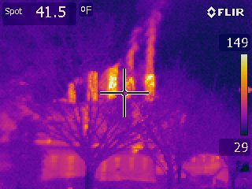

Cluster for Sustainability in the Built Environment
The Building Science Group has launched the Cluster for Sustainability in the Built Environment at the University of Maryland (CITY@UMD). The Cluster's mission is to understand the fundamental principles of built infrastructure's impact on energy consumption, environmental quality, and population well-being. This understanding enables the creation and management of healthy urban ecosystems.
The Building Science Group has launched the Cluster for Sustainability in the Built Environment at the University of Maryland (CITY@UMD). The Cluster's mission is to understand the fundamental principals of built infrastructure's impact on energy consumption, environmental quality, and population well-being.
To enable the development and implementation of
energy efficient buildings
&
healthy urban ecosystems

Seeing UMD in a New Light
Typically, when people think of campus building energy use, they think of lighting. Lights are very visible, are often left on when no one is using the space, and are a sizeable portion of commercial building energy use.
There is also a lot of energy in the light we don’t see – long-wave radiation in the infrared, which we perceive heat. We wanted to see that energy use as well, so last week, members of BSG and the Student Sustainability Committee traveled around campus at night to see the campus through an IR camera.
Energy and Buildings
"The impact of exterior surface convective heat transfer coefficients on the building energy consumption in urban neighborhoods with different plan area densities"
By: Jiying Liu, Mohammad Heidarinejad, Stefan Gracik, and Jelena Srebric
"The impact of exterior surface convective heat transfer coefficients on the building energy consumption in urban neighborhoods with different plan area densities"
By: Jiying Liu, Mohammad Heidarinejad, Stefan Gracik, and Jelena Srebric
Dr. Farber speaks in UMD ME Seminar Series
12/10/2014: Dr. Darryl Farber, an Assistant Professor in the Pennsylvania State University's College of Engineering, spoke as part of the University of Maryland's Department of Mechanical Engineering 2014 Seminar Series. Attended by members of the Cluster for Sustainbaility and UMD ME students, he spoke about the "Strategic Analysis of Interdependent Infrastructures." Dr. Jelena Srebric hosted Dr. Farber as the seminar speaker. See Flyer for more details.
12/10/2014: Dr. Darryl Farber, an Assistant Professor in the Pennsylvania State University's College of Engineering, spoke as part of the University of Maryland's Department of Mechanical Engineering 2014 Seminar Series. Attended by members of the Cluster for Sustainbaility and UMD ME students, he spoke about the "Strategic Analysis of Interdependent Infrastructures." Dr. Jelena Srebric hosted Dr. Farber as the seminar speaker. See Flyer for more details.